APECET ADMISSIONS
LIST OF HELP LINE CENTRES
| S.N0 | HLC CODE | HLC NAME | HLC ADDRESS | DISTRICT | Pick/Official Website |
| 1 | ANTP01 | GOVERNMENT POLYTECHNIC | ANANTHAPUR | ANANTHAPUR | 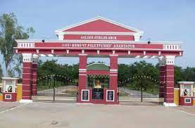 |
| 2 | APKN06 | ANDHRA POLYTECHNIC | KAKINADA | EAST GODAVARI | 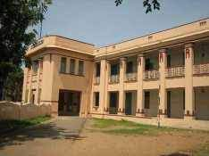 |
| 3 | GPKL20 | SRI G. PULLA REDDY GOVT. POLYTECHNIC | B.THANDRAPADU, KURNOOL | KURNOOL | 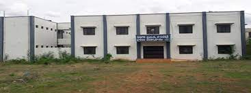 |
| 4 | KDPW14 | GOVERNMENT POLYTECHNIC FOR WOMEN | RAMANJANEYA PURAM, KADAPA | KADAPA | 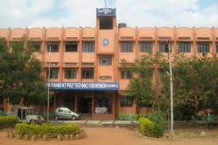 |
| 5 | MBTS12 | M.B.T.S. GOVT. POLYTECHNIC | NALLAPADU,GUNTUR | GUNTUR | 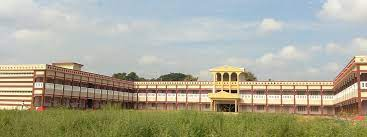 |
| 6 | NLRG23 | GOVERNMENT POLYTECHNIC | VENKATESWARA PURAM, NELLORE | NELLORE | 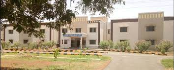 |
| 7 | ONGL25 | D.A. GOVT. POLYTECHNIC | PRAKASAM | PRAKASAM | 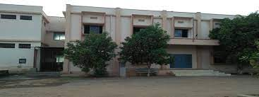 |
| 8 | SKLM27 | GOVERNMENT POLYTECHNIC | GUJARAT IPETA, SRIKAKULAM | SRIKAKULAM | 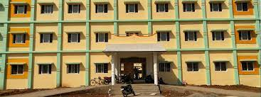 |
| 9 | SMVM33 | S.M.V.M. POLYTECHNIC | TIMMA RAJA PURAM,TANUKU | WEST GODAVARI | 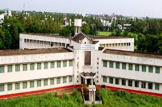 |
| 10 | SVTP05 | S.V. GOVERNMENT POLYTECHNIC | K.T ROAD, TIRUPATHI | CHITTOOR | 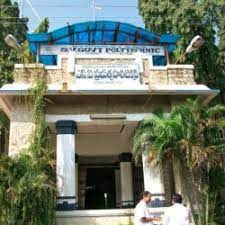 |
| 11 | VJWD19 | GOVERNMENT POLYTECHNIC | OPP. STELLAY COLLEGE,NEAR BENZ CIRCLE,VIJAYAWADA | KRISHNA | 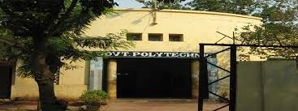 |
| 12 | VSPM30 | GOVERNMENT POLYTECHNIC | KANCHARA PALEM, VISAKHAPATNAM | VISAKHAPATNAM | 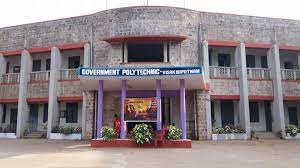 |
| 13 | VZNM31 | M.R.A.G.R. GOVT. POLYTECHNIC | VIZIANAGARAM | VIZIANAGARAM | 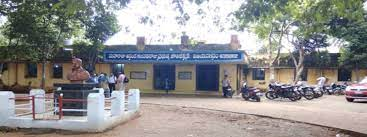 |
| 14 | LOYL17 | ANDHRA LOYOLA COLLEGE | VIJAYAWADA,OPP. STELLAY COLLEGE,NEAR RAMESH HOSPITA | KRISHNA | 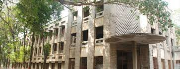 |